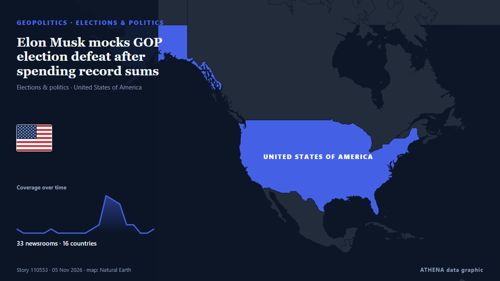

Elon Musk mocks GOP election defeat after spending record sums

"Guess my election-interfering space lasers didn't work this time," Musk said on X, including the shrug emoji. von The New Arab
Unabhängig gemeldet von 33 Medien in 16 Ländern seit dem 2. Nov., zuerst von CommonDreams; die Berichterstattung flaut ab. ATHENA stuft das Risiko als niedrig ein (1.6/10), vor allem wegen der Schwere des beschriebenen Schadens und seiner geografischen und sektoralen Reichweite. Die Konfidenz liegt bei 90 % (hoch): 33 Medien bestätigen es unabhängig, bei einer mittleren Verlässlichkeit der Quellen von 74 %. Medien nach Land: Vereinigte Staaten (12), Nigeria (3), Irland (2). Berichterstattung: 2. Nov. bis 5. Nov., 61 Stunden.
Warum es wichtig ist: Sicherheits- und diplomatische Entwicklungen können Bündnisse, Handel und Märkte weit über die direkt beteiligten Länder hinaus verschieben.
Was sich geändert hat: 31 neue Berichte von 31 Redaktionen in den 24 Stunden bis 5. Nov..
Erste Schlagzeile: Elon Musk, angry voters, and the AI backlash: What's at stake in the 2026 midterms
Schlagzeilen werden auf Englisch angezeigt, wie veröffentlicht.
Auf einen Blick
Ausgewählt, bewertet und geschrieben nach der veröffentlichten Methodik von ATHENA. Kein Redakteur greift in einzelne Ereignisse ein. So entsteht ATHENA ›
| 02 Nov 18:04 UTC | 1 |
|---|---|
| 02 Nov 21:04 UTC | 0 |
| 03 Nov 00:04 UTC | 0 |
| 03 Nov 03:04 UTC | 0 |
| 03 Nov 06:04 UTC | 0 |
| 03 Nov 09:04 UTC | 1 |
| 03 Nov 12:04 UTC | 0 |
| 03 Nov 15:04 UTC | 0 |
| 03 Nov 18:04 UTC | 0 |
| 03 Nov 21:04 UTC | 0 |
| 04 Nov 00:04 UTC | 0 |
| 04 Nov 03:04 UTC | 1 |
| 04 Nov 06:04 UTC | 2 |
| 04 Nov 09:04 UTC | 9 |
| 04 Nov 12:04 UTC | 8 |
| 04 Nov 15:04 UTC | 7 |
| 04 Nov 18:04 UTC | 2 |
| 04 Nov 21:04 UTC | 2 |
| 05 Nov 00:04 UTC | 0 |
| 05 Nov 03:04 UTC | 0 |
| 05 Nov 06:04 UTC | 1 |
| 03 Nov 12:10 UTC | 0.0 |
|---|---|
| 04 Nov 11:14 UTC | 1.4 |
| 05 Nov 07:17 UTC | 1.6 |
Warum diese Zahlen
Bedeutung
Risiko
Konfidenz
Die Berichterstattung – wer berichtete, und wann
Schlagzeile wie veröffentlicht · öffnet das Original- CommonDreams · Vereinigte StaatenElon Musk Becomes Senate Leadership Fund’s Main Donor In Quarter Three
- Business Insider · Vereinigte StaatenElon Musk, angry voters, and the AI backlash: What's at stake in the 2026 midterms
- Business Insider · Vereinigte StaatenElon Musk's Texas-sized midterms failure
- Fortune · Vereinigte Staaten‘This might just be the biggest defeat for big money in politics’: Billionaires poured hundreds of millions into Tuesday’s races and still lost
- RTÉ News · IrlandMusk jokes about election loss after spending record sums
- Arab News · Saudi-ArabienElon Musk jokes about GOP election defeat after spending record sums on party
- Channels TV · NigeriaElon Musk Makes Joke Of Republicans’ Election Defeat
- Asharq Al-Awsat (English) · Saudi-ArabienElon Musk Jokes About GOP Election Defeat After Spending Record Sums on Party
- Vanguard · NigeriaElon Musk jokes about GOP election defeat after spending record sums on party
- Politico Europe · BelgienElon Musk suffers major blow in US midterms
- New Straits Times · MalaysiaElon Musk jokes about GOP election defeat after spending record sums on party
- Punch · NigeriaMusk jokes about failed ‘space lasers’ after Republican defeat
- Times of India · IndienWhy Texas turning Blue is Elon Musk’s ‘biggest defeat’
- Free Malaysia Today · MalaysiaMusk jokes after Republicans suffer US midterm election defeat
- Al Jazeera English · KatarMusk makes light of defeats after record spend on Republican candidates
- The Straits Times · SingapurElon Musk's business empire braces for Democratic wave as Texas flips blue
- The New Arab · INTElon Musk mocks GOP election defeat after spending record sums
- TheJournal.ie · IrlandHow megadonors like Elon Musk spent $1.7 billion on the midterms, but couldn’t stop the Democrats
- BBC Business · Vereinigtes KönigreichElon Musk's millions failed to deliver Republican wins in fierce midterms
- The Independent · Vereinigtes KönigreichTrump frenemy Elon Musk spent nearly $500M on the election - all he got out of it was MAGA losing its power
- Anadolu Agency (English) · TürkeiUS midterms cost Elon Musk more than $60 billion: Report
- The Hill · Vereinigte StaatenMusk jokes about GOP losses after spending big in midterms
- NDTV · IndienElon Musk Spent Rs 4,700 Crore On Midterms. Now Democrats May Come For His Empire
- Nile Post · UgandaElon Musk's millions fail to deliver Texas for the Republicans in fierce midterms
- CNBC World · Vereinigte StaatenElon Musk’s record election bet backfired. The backlash may reach beyond one billionaire
- The Verge · Vereinigte StaatenNot even $200 million could help Elon Musk buy Texas
- Wired · Vereinigte StaatenVoters Set $400 Million of Elon Musk’s Money on Fire
- Business Insider · Vereinigte StaatenElon Musk's 'vote red' post vanished after Election Day
- Engadget · Vereinigte StaatenElon Musk spent nearly $500 million on the midterms and lost big-time
- Fast Company · Vereinigte StaatenElon Musk spent nearly $500 million on the midterms. It bought him almost nothing
- CBC News · KanadaElon Musk gets little bang for his buck in U.S. midterms, with possible Democratic investigations to come
- NPR · Vereinigte StaatenElon Musk will face scrutiny from Democrats after midterms
- MyJoyOnline · GhanaElon Musk’s millions failed to deliver Republican wins in fierce midterms
- The Kathmandu Post · NepalElon Musk’s business empire braces for Democratic wave as Texas flips blue